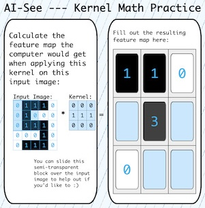

On Teaching Image Recognition to Children at a Summer Camp
Proceedings of the 57th ACM Technical Symposium on Computer
Science Education (SIGCSE TS) • 2026 (To Appear)
K-12 AI Literacy
Engaging Computing Group